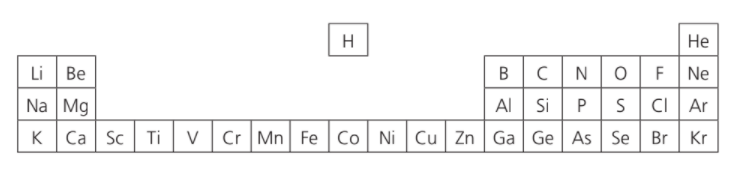

2021-08-28
Question 1
The following question concerns about the first 36 elements.
From these first 36 elements only, identify an element that fits each of the following descriptions.
- The element that forms a 2+ ion with the same electronic arrangement as an atom of Ar.
- The element that forms a 3– ion with the same electronic arrangement as an atom of Ne.
- The element that is the most electronegative.
- The element that is used as a catalyst in the Haber process.
- The element that can exhibit an oxidation state of +7.
- A metal which forms an amphoteric oxide
- A transition metal that can only exhibit an oxidation state of +2.
- A transition metal that forms an ion which is green in colour in aqueous solution.
- What is the electron arrangement of an atom of Zn?
- What is the highest possible oxidation state of chromium?
- Give a chromium compound in which chromium is in its highest oxidation state.